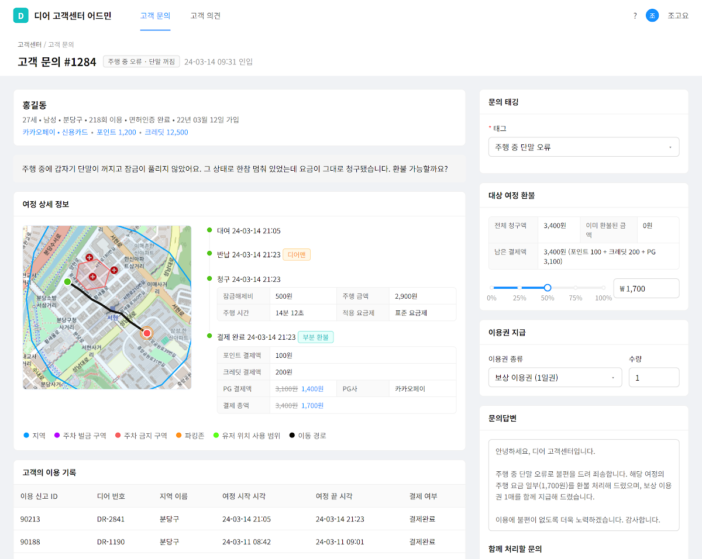

주도적으로 문제를 해결하는 4년차 백엔드 개발자 박정수입니다.
초기 모빌리티 스타트업에 합류해 32명 규모로 회원 150만, 매출 200억 원 서비스를 만들었습니다. 신규 서비스의 설계부터 런칭, 운영 안정화까지 전 과정에 주도적으로 참여했습니다.
바닥부터 만들어 본 경험을 바탕으로, 단순 구현보다 문제의 근본 원인을 찾고 구조로 해결하는 것을 선호합니다. 모놀리식 분리, 조회 최적화 등 트래픽이 몰리는 도메인에서 안정화 경험을 쌓아왔습니다.
운영 데이터로 검증하며 단계적으로 결정하는 스타일을 가지고 있습니다. 한 번에 완벽한 해답을 찾기보다, 작게 도입한 뒤 한계가 드러나는 지점을 다음 단계의 근거로 삼아 구조를 발전시켜 왔습니다. 최근에는 AI Agent를 적극적으로 활용해 반복 작업과 CS 응대를 자동화하고, 익힌 활용법을 팀에 공유하며 함께 생산성을 끌어올리고 있습니다.
백엔드 개발자
2025.12 - 재직 중
국민연금공단, 한전MCS 등 197개 기관이 사용 중인 공공 ERP 솔루션
백엔드 개발자
2020.09 - 2024.01
회원 150만, 매출 200억 원의 24시간 공유 모빌리티 서비스
두 서버에 흩어진 결제, 환불, 정산을
단일 결제 서비스로 통합
Java 17, Spring Boot, JUnit 5, TestContainer, Aurora MySQL 8.0, Redis, SQS
프로젝트 개요
결제 로직은 모놀리식, 환불과 정산은 백오피스 서버에 흩어져 있어 변경사항이 발생하면 중복 수정해야 하는 구조. 이에 유지보수와 책임 분리를 위해 별도 결제 서비스로 분리
팀 구성 및 역할
주요 업무
문제 해결 과정
기여 성과
RDS 장애 해소, 조회 속도 6s → 0.4s
Java 17, Spring Boot, Redis, MySQL 5.7
프로젝트 개요
지역 조회 API의 RDS Full Scan 쿼리가 CPU 사용량을 끌어올려 Timeout이 발생했고, 전체 서비스 장애로 확산. 이에 캐싱 전략을 점진적으로 도입하며 해결.
팀 구성 및 역할
주요 업무
문제 해결 과정
기여 성과
프로세스 개선으로 일 평균 VOC 처리량 56% 개선
Node.js, Express, React, Amplitude, Datadog Logs API

프로젝트 개요
반납 실패 문의 시 CS가 실제 종료 여부와 적정 요금을 알 수 없어 매번 개발자 확인과 수기 계산에 의존하던 흐름을, 종료 시점 추정과 환불 차액 산정까지 한 화면에서 처리하도록 개선
팀 구성 및 역할
주요 업무
문제 해결 과정
기여 성과
2025.09
2024.06
2025.12
IT파이낸스 (학사)
2025.03 - 2027.02 (졸업예정)
컴퓨터정보공학 (전문학사)
2022.03 - 2024.02